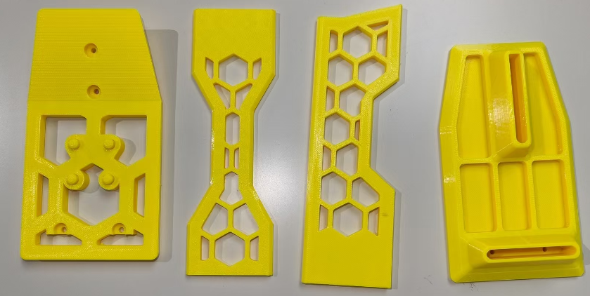
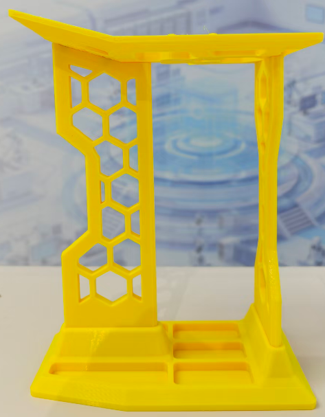

<!DOCTYPE lake>
<p data-lake-id="u36b4f122" id="u36b4f122"><span data-lake-id="u8af40e59" id="u8af40e59">先找出所有支架，然后再找8颗M3的螺丝</span></p><p data-lake-id="u0ef25686" id="u0ef25686" style="text-align: center"></p><p data-lake-id="u13b55233" id="u13b55233" style="text-align: center"><span data-lake-id="u124115ac" id="u124115ac">装完之后如下图所示，记得打入8颗M3的螺丝</span></p><p data-lake-id="ue88c0ed2" id="ue88c0ed2" style="text-align: center"></p>